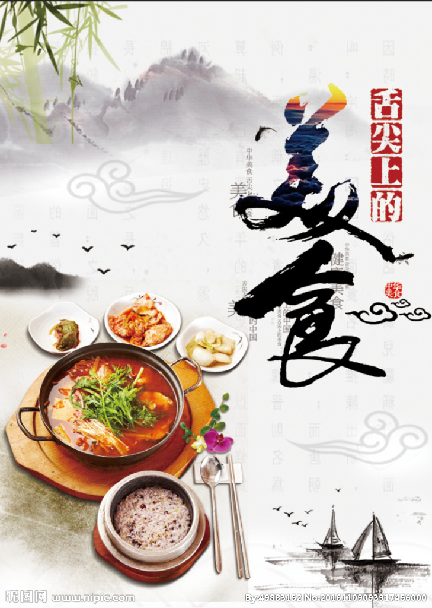
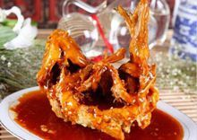
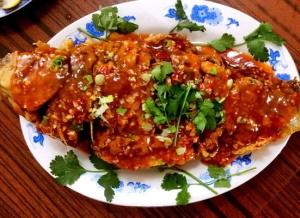
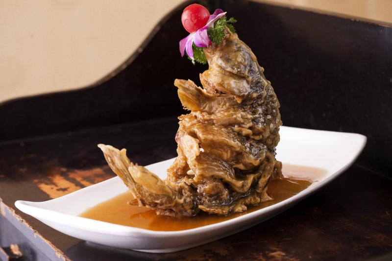
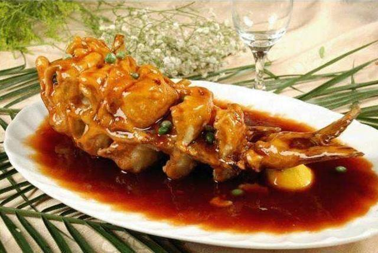
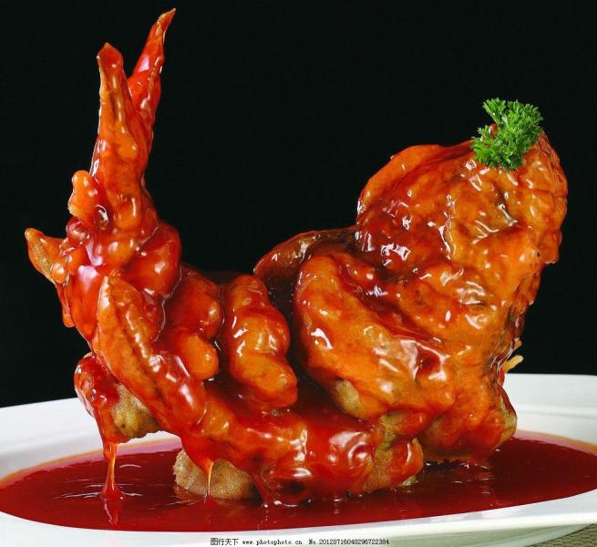

👩介绍人
一位逛吃的美食爱好者
姓名：沈奥
学号：201916180301
班级：通信1903
下一位：张萌萌
201916180302
上一位：方传苏
201916130201
🥢美食简介
鲤鱼在民间有吉祥的象征意义
中国饮食在很重要的场合也会有它的一席之地《诗经》载：岂食其鱼，必河之鲤。《济南府志》上早有“黄河之鲤，南阳之蟹，且入食谱”的记载。据这些史料推测，说明早在3000多年以前，黄河鲤鱼就已经成为脍炙人口的名食了。
美食推荐🍅糖醋鲤鱼(📍)





做法介绍:
1.鲤鱼去鳞、内脏、两腮，鱼身两侧每2.5厘米直剞后斜剞成翻刀，提起鱼尾使刀口张开，料酒、精盐撒入刀口稍腌
2.清汤、酱油、料酒、醋、白糖、精盐、湿淀粉对成芡汁
3.在刀口处撒上湿淀粉后,放在七成热的油中炸至外皮变硬，移微火浸炸3分钟，再上旺火炸至金黄色，捞出摆盘，用
手将鱼捏松
4.将葱、姜、蒜放入锅中炸出香味后倒入对好的芡汁，起泡时用炸鱼的沸油冲入汁内，加以略炒迅速烧到鱼上即可
营养功效:
鲤鱼中含有蛋白质、VA、VE、VB等多种维生素，此外还富含钾、钠、磷、钙、碘等矿物元素。功效主要有：能，
治疗小儿黄疸对小儿腹泻有很好的疗效；能补充多种维生素和蛋白质，促进消化吸收，增强抵抗力；对胸闷、腹胀
等疾病有一定疗效；有利于去除体内的寒气，提高免疫力；能防治动脉硬化、冠心病，还能延年益寿